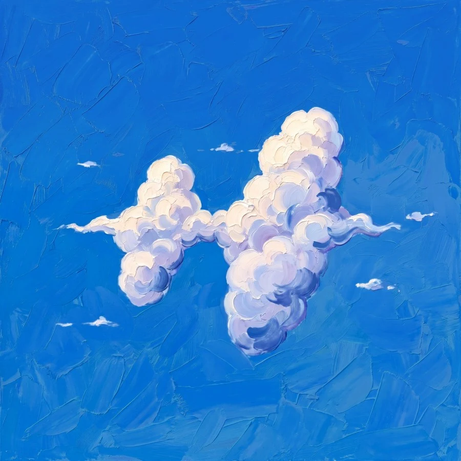
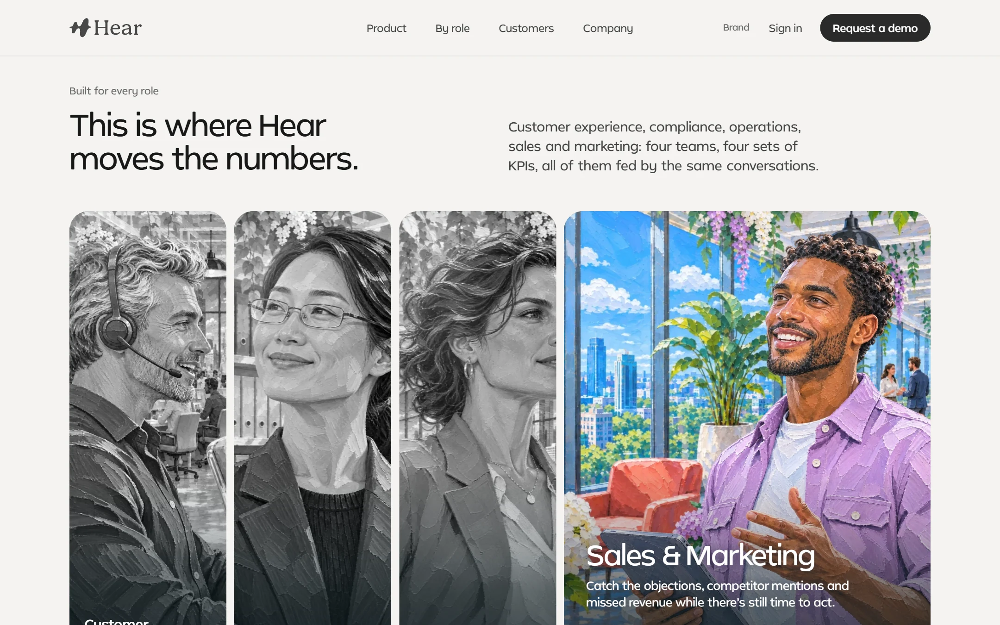
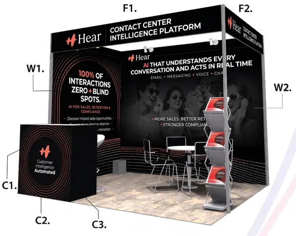
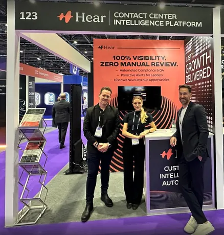
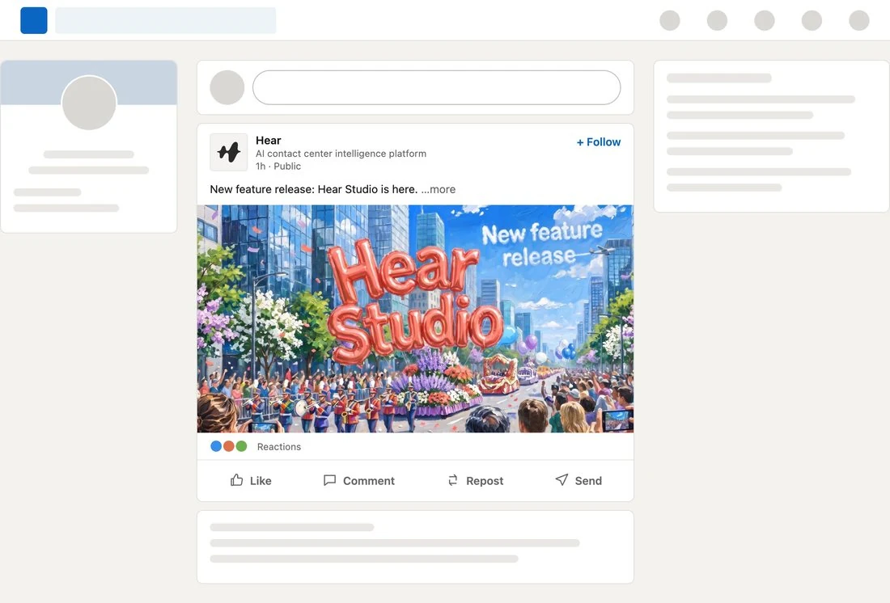
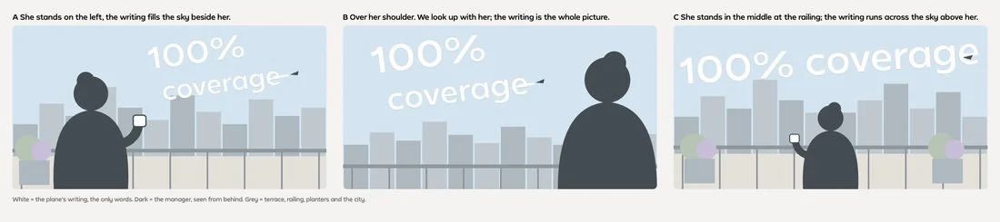
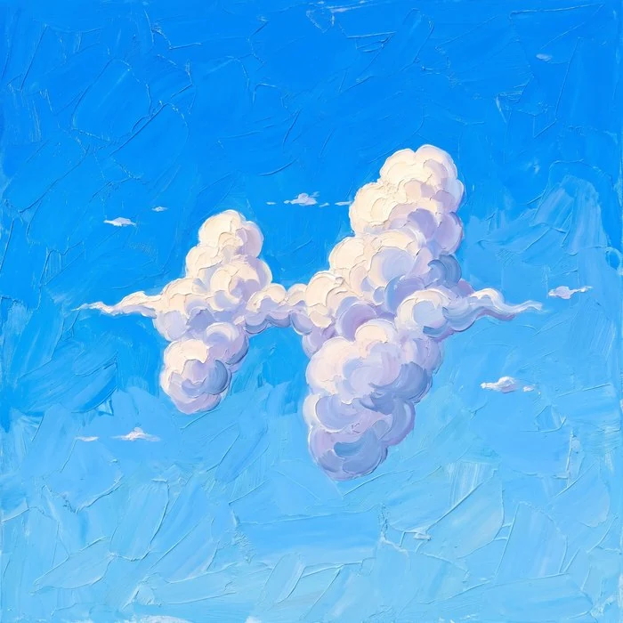
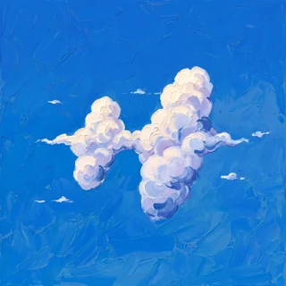
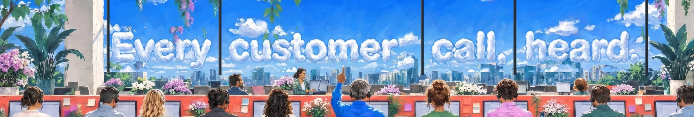

I designed Hear's brand from zero
- The challenge
- Hear, an AI platform for contact centers, needed one brand for the product, the website, social and print.
- What I designed
- The mark, the color, the type and one painted city, then the marketing site, a LinkedIn campaign, signage and merch.
- Where it stands
- The site runs on staging. The campaign, the station sign and the tote are mockups. A trade-show booth was built from my earlier design.

A mark, nine colors, one typeface and a painted city
Every color has one job, one typeface sets every line, and every picture comes from the same city.
Read moreShow less
The same values run through the product and the site. In the paintings the colors are oil paint, not fixed values, but they are the same family: a blue sky, coral, lilac and green.

Color
#F4F3F1#CFE4F6#CBD3DA#181818#139FFD#0B6FCF#FF6F52#4BA373#D59BE0- One accent per screen. A page is not improved by more colors and tags.
- Coral is a signature. It is used sparingly, never as a background.
- A painted sky first. It is preferred over a flat fill of brand color.
Type
What your customers actually said.Byrd Bold 700 · headlines inside paintings and ads
We hear every call. Even here.Byrd SemiBold 600 · subheads and emphasis
Every conversation. Not a sample.Byrd Medium 500 · small headings and buttons
Run your contact center on what customers actually say.Byrd Regular 400 · the site's large headlines and running text
- Sentence case. A capital only starts a sentence. No headline is set in capitals.
- Our typeface inside the picture. The object never picks the font, and the writing is large.
- Tight headlines. Running text keeps normal spacing.
The painted city

- Thick oil paint, with a knife. Sharp patches with clear edges. Nothing smooth, sprayed or photographed.
- Bright daylight. Saturated color, glass towers, a blue sky with heavy clouds, flowers and people.
- Grown-up realism. Not a caricature and not a children's illustration.
- The world is full, edge to edge. Only the area around the message stays open.
- A person's point of view. A spectator in the crowd, a customer at a table. People are small or seen from behind.
- The world writes the message. A receipt, a plane's trail, balloon letters, a headline. Never a layer on top.
The same nine colors run through Hear Design Lab. The design system has its own case study.
The same city, built as a site
I designed and built the marketing site, and it runs on staging.
Read moreShow less
The page opens on the painted contact center. Below it the product appears in glass panels that sit on the same sky, and the story runs from the people who use Hear to what it checks.



The brand beyond the screen
Before the painted city, a trade-show booth was built from my design. A station sign and a tote now carry the new brand off the screen, as mockups.
Read moreShow less
Both pieces come from one campaign, about the customers who were heard.
Before · a trade-show booth in the earlier identity


Station sign


Tote bag


Every picture starts as one sentence
Each picture follows one order: the idea in words, three gray compositions, one painting, then a check at the size of a real post.
Read moreShow less
No picture is made before its idea and its composition are chosen, and the work moves one picture at a time.
The brand came ahead of the website and the product in my plan for Hear's redesign. Its eight phases are Research, Branding, Designing, Website, Growth, Product, UI design and Process.
- The idea, in wordsWhat you see, where the words live in the scene, and what a stranger understands about Hear.
- Three gray compositionsGray shapes in the final format, with one color for the place of the words.
- One paintingPainted only after a composition is chosen, then fixed one problem at a time.
- A check at feed sizeInside a mockup of the feed, at the size a post is really seen.
From the sketch to the post



The sketches behind three more posts



What I rejected, and why



What does a stranger understand about Hear from this picture?
The test every idea passes. If there is no one sentence, there is no idea.


One painted city. The message is inside the picture.
The new site is set in a painted city, so I took the same city to LinkedIn. Six posts, each a single painting, with the line written into the scene: balloon letters, a plane's trail, a café receipt, the morning paper.

New feature release: Hear Studio is here.

The company page. The cover is one strip of the same city. The profile picture is the mark, painted as a cloud.